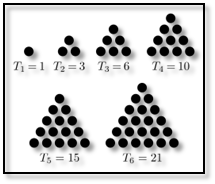

מחברת #1 (פִּרְקָנים)
תרגיל 1: *****__*_*_*__*** (נגה אוסין)
ממשו פונקציה אשר מקבלת מחרוזת, ועובדת לפי החוקיות הבאה –
עבור כל אות:
- אם האות מופיעה יותר מפעם אחת, החליפו אותה בתו
*. - אחרת, החליפו אותה בתו
_.
הפונקציה אינה case sensitive, כלומר, מבחינת הפונקציה אין הבדל בין אותיות גדולות ואותיות קטנות.
דוגמאות:
- עבור הקלט
ABBAיוחזר****. - עבור הקלט
Ali Baba, יוחזר*___****. - עבור הקלט
CatDog, יוחזר______.
מחברת #2 (פונקציות – חלק 2)
תרגיל 1: מלך הפלאפל (נגה אוסין)
כתבו פונקציה בשם print_recipe המסייעת למוכר הפלאפל השכונתי שלכם.
הפונקציה תקבל את מספר המנות שהוזמנו כפרמטר ראשון. הפרמטר השני יהיה בוליאני, וערכו יהיה True אם הלקוח הוא לקוח קבוע. ערך ברירת־המחדל של פרמטר זה יהיה False.
שמות הפרמטרים הבאים יהיו שמות התוספות שהלקוח רוצה, וערכם יהיה הכמות של כל אחת מאותן תוספות.
אם הלקוח הוא לקוח קבוע, תודפס לו ברכת שלום חמה. לאחר מכן יודפס לו כמה מנות פלאפל הזמין, וכמה מכל תוספת. הפונקציה אינה מחזירה ערך.
דוגמאות:
- עבור הקריאה:
print_recipe(2, True, tahini='a bucket', parsley='a lot', amba='a little bit')
יודפס:
Hey, nice to see you again!
2 servings of falafel for you!
With a bucket of tahini!
With a lot of parsley!
With a little bit of amba!
- עבור הקריאה:
print_recipe(4, tahini='tons', Tabasco='a bottle')
יודפס:
4 servings of falafel for you!
With tons of tahini!
With a bottle of Tabasco!
מחברת #3 (מחוֹללים)
תרגיל 1: (נגה אוסין)
התבוננו בשני קטעי הקוד שלפניכם. הוציאו דף ועט וכתבו: אם נריץ את הגנרטורים הבאים באמצעות לולאת for, מה לדעתכם יהיה הפלט של כל yield? מה יהיה ה־type של כל אחד מהם?
def foo(*args, **kwargs):
for key, value in kwargs.items():
yield key, value
for i in args:
yield i
def other_foo(*args, **kwargs):
for key, value in kwargs.items():
for i in args:
yield i
yield key, value
יש בעיה בקוד הבא. מה היא?
def completely_different_foo(optional=None, *args, **kwargs):
if optional:
yield optional
for key, value in kwargs.items():
for i in args:
yield i
yield key, value
תרגיל 2: הראשוני לשמו (נגה אוסין)
2 הוא המספר הראשוני הראשון. 3 הוא השני. 541 נמצא במקום המאה.
כתבו פונקציה אשר מקבלת מהמשתמש את מיקום המספר הראשוני, ומחזירה את המספר עצמו.
מהו המספר הראשוני במקום ה־4,000?
נסו להשתמש ב־generators.
הבהרה: המיקום של המספר הראשוני הראשון הוא 1, של השני הוא 2, וכן הלאה.
תרגיל 3: התחלק על הכובע (נגה אוסין)
א. מספר כלשהו (נקרא לו T) יהיה “מספר משולשי” אם ניתן לסדר T עצמים כמשולש שווה צלעות, כך:

המספר המשולשי הראשון הוא 1, המספר המשולשי השני הוא 1+2, השלישי הוא 1+2+3, הרביעי הוא 1+2+3+4, וכן הלאה.
ממשו גנרטור אשר מניב (yield) מספרים משולשיים.
ב. מחלקים של מספר שלם הם כל המספרים בהם הוא מתחלק ללא שארית.
המספר 3, למשל, מתחלק רק בעצמו וב־1 (מספר ראשוני), ולכן כמות המחלקים שלו היא 2. 4 מתחלק בעצמו, ב־1 וב־2, ולכן כמות המחלקים שלו היא 3. כמות המחלקים של 300 היא 18.
היעזרו בגנרטור שמימשתם בסעיף א’, ומצאו מספר משולשי בעל 120 מחלקים.
תרגיל 4: The Library (ים מסיקה)
כתבו פונקציה שמקבלת כפרמטרים נתיב, ומילות חיפוש.
הפונקציה תחזיר את כל הקבצים שמכילים את המילים שסופקו כמילות חיפוש.
הפונקציה תדע לחפש בתיקיות ובתתי התיקיות הרלוונטיים.


 פספסתי את הכותרת של זה… חחחחח
פספסתי את הכותרת של זה… חחחחח
{kind=link}